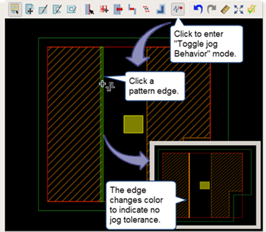

Specifying Jog Tolerance for Patterns in a Library
Jog tolerance is specified
at the library level and applies to all pattern edges by default.
You can select individual TEM pattern edges and disable jog tolerance
for that edge. When jog tolerance is specified for an edge, jogs
in the pattern or layout that are within the tolerance are ignored during
pattern matching.
Prerequisites
A pattern library is open in the Calibre Pattern Matching GUI. See “Invoking the Calibre Pattern Matching GUI”.
Procedure
- Choose or
click the Library Attributes button (
 ) to open the Library
dialog box
) to open the Library
dialog box - (Optional)
Do the following to remove jog tolerance from selected TEM pattern
edges:
- Select
a TEM pattern in the pattern list.
You cannot toggle jog behavior for edges in BCM patterns.
- Click
the
 button to enter the
Toggle jog Behavior mode, which is indicated with a mouse
cursor.
button to enter the
Toggle jog Behavior mode, which is indicated with a mouse
cursor. - Click a pattern edge to toggle the jog tolerance application for the edge.
The pattern edge changes color, as shown in the preceding figure. In addition, the entry “Jog Tags” is added to the Constraints tab on the right side of the GUI, under “jog Removal Tags.”
- Select
a TEM pattern in the pattern list.